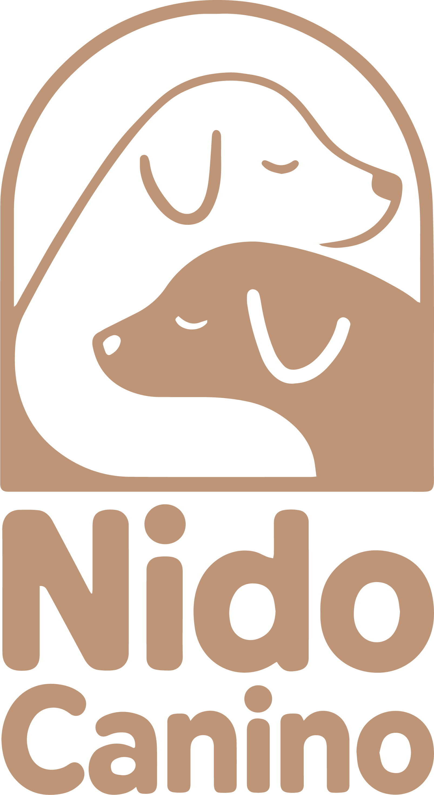
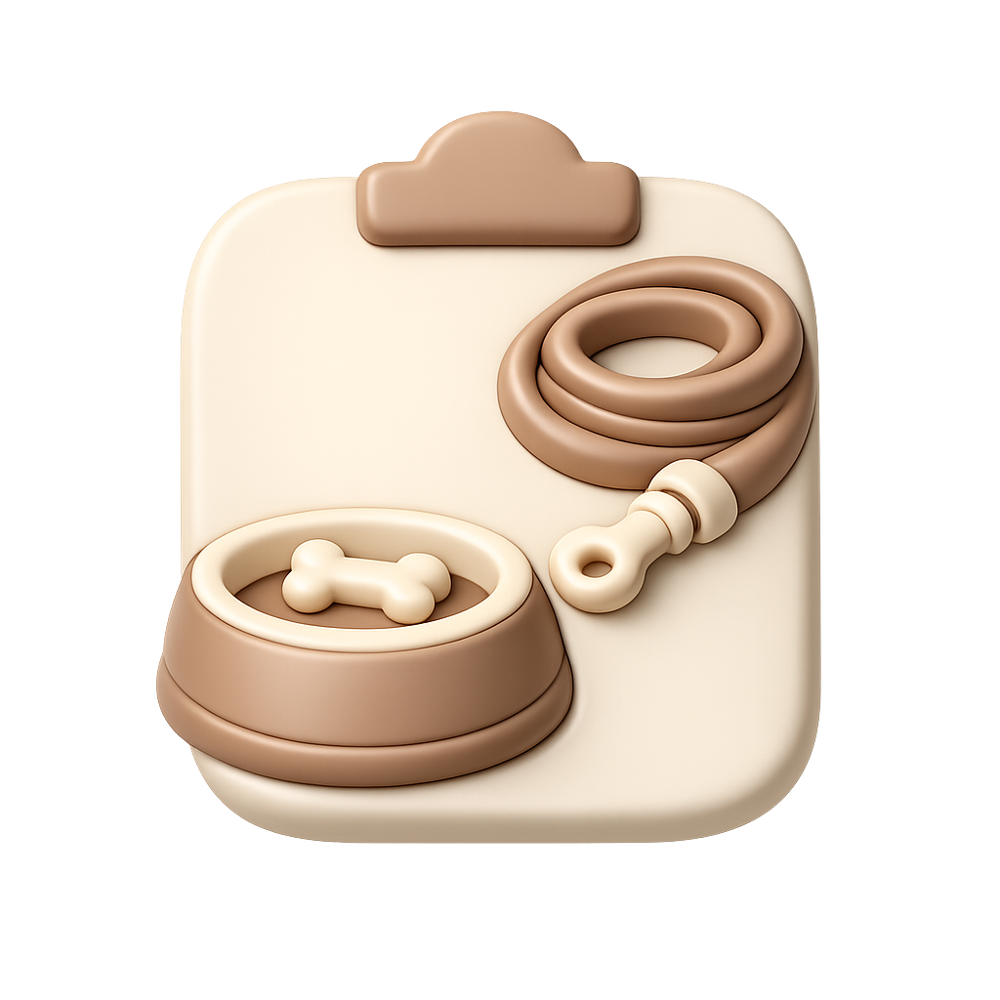
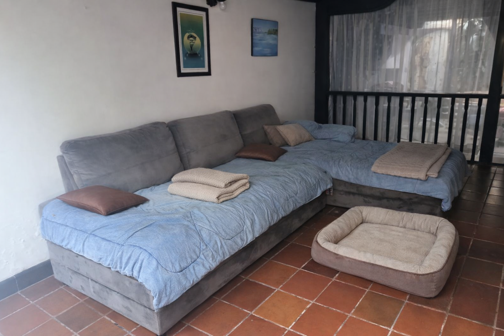
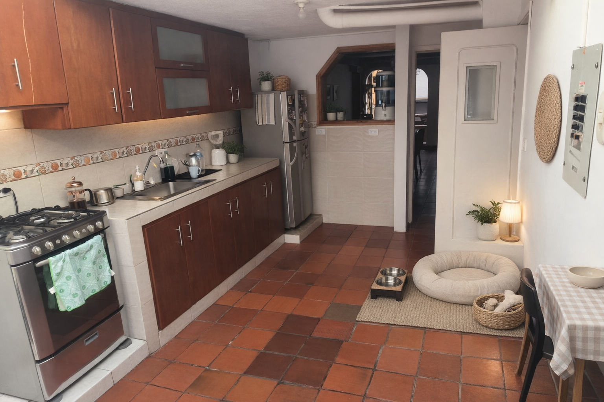
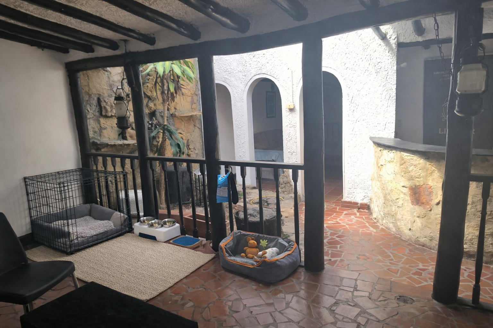

Grupos pequeños · cuidado personalizado
Máx. 5 perros
La convivencia se diseña con cupos limitados y mejor observación.
Bogotá
Operación pensada principalmente para occidente y zonas cercanas.
Modelo premium
Menos saturación, más criterio, más estructura y mejor lectura de cada caso.
Cuidado más tranquilo para perros y gatos
Nido Canino es una propuesta de cuidado pensada para tutores que valoran la calma, la observación real y un entorno más estructurado que el de una guardería masiva.

Convivencia canina
Entorno más regulado
Visitas para gatos
Rutina en casa
No todo animal necesita el mismo tipo de cuidado. Por eso Nido Canino no parte de la cantidad, sino de la compatibilidad, la rutina y el bienestar real de la mascota.
La propuesta
Un modelo pensado para la estabilidad, no para la saturación
La idea central de Nido Canino no es “tener perros ocupados todo el tiempo”, sino ofrecer un entorno donde la convivencia se pueda observar, regular y sostener con más criterio.
Menos estímulo innecesario
El cuidado mejora cuando el entorno permite bajar intensidad, respetar pausas y leer mejor al perro.
Más observación real
Con menos cupos y más estructura, es más fácil notar cambios en comportamiento, energía o adaptación.
Servicios con criterio
Cada caso se revisa según perfil, zona, duración y compatibilidad. No todo se confirma automáticamente.
Explore la web

Tres rutas claras dentro de Nido Canino
El sitio no está pensado solo para “pedir un servicio”, sino para orientar, educar y preparar mejor al tutor.
Servicios
Conozca cómo funciona la convivencia canina, la evaluación previa, las visitas para gatos y las asesorías.
Ir a ServiciosBlog
Guías breves para entender mejor señales de estrés, grupos pequeños, perros senior, gatos en casa y preparación.
Ir al Blog
Recursos
Checklists, plantillas y herramientas rápidas para organizar mejor una solicitud o la rutina de una mascota.
Ir a Recursos
El entorno
Un espacio pensado para bajar el ritmo
El entorno también comunica el tipo de cuidado. Por eso el espacio importa tanto como la rutina.

Descanso
Espacios más tranquilos, cómodos y visualmente limpios ayudan a que el perro no viva en activación constante.

Rutina de comida
La organización también se ve en lo básico: alimentación, orden y claridad sobre lo que necesita cada perro.

Convivencia
El objetivo no es llenar de actividad cada minuto, sino sostener una convivencia que pueda regularse mejor.
Proceso
Cómo funciona Nido Canino
La solicitud en la app es una aproximación inicial. La confirmación llega después de revisar el caso.
1
Conozca el servicio
Revise si lo que necesita encaja mejor con convivencia canina, evaluación previa, visita felina o asesoría.
2
Cree su perfil y registre la mascota
La app permite organizar la información básica del tutor y de la mascota antes de solicitar.
3
Envíe una solicitud tentativa
Se revisa disponibilidad, perfil de la mascota, zona y viabilidad del servicio solicitado.
4
Confirmación y siguientes pasos
Si el caso encaja, se acuerdan detalles operativos, tiempos y, cuando aplique, evaluación previa.
Empiece por algo útil
Dos formas rápidas de aprovechar la web
Si todavía no va a solicitar servicio, igual puede usar la web para entender mejor el perfil de su mascota o prepararse mejor.
Leer
En el Blog encontrará artículos breves sobre señales de estrés, grupos pequeños, gatos en casa, perros senior y preparación del tutor.
Ir al BlogOrganizar
En Recursos encontrará checklists y herramientas rápidas para ordenar mejor información práctica antes de solicitar.
Ir a Recursos
Siguiente paso
¿Quiere revisar si su mascota encaja con alguno de nuestros servicios?
Puede empezar explorando los servicios, leer una guía breve o enviar una solicitud tentativa. La idea es que llegue con más claridad y que el proceso se sienta cuidado desde el inicio.